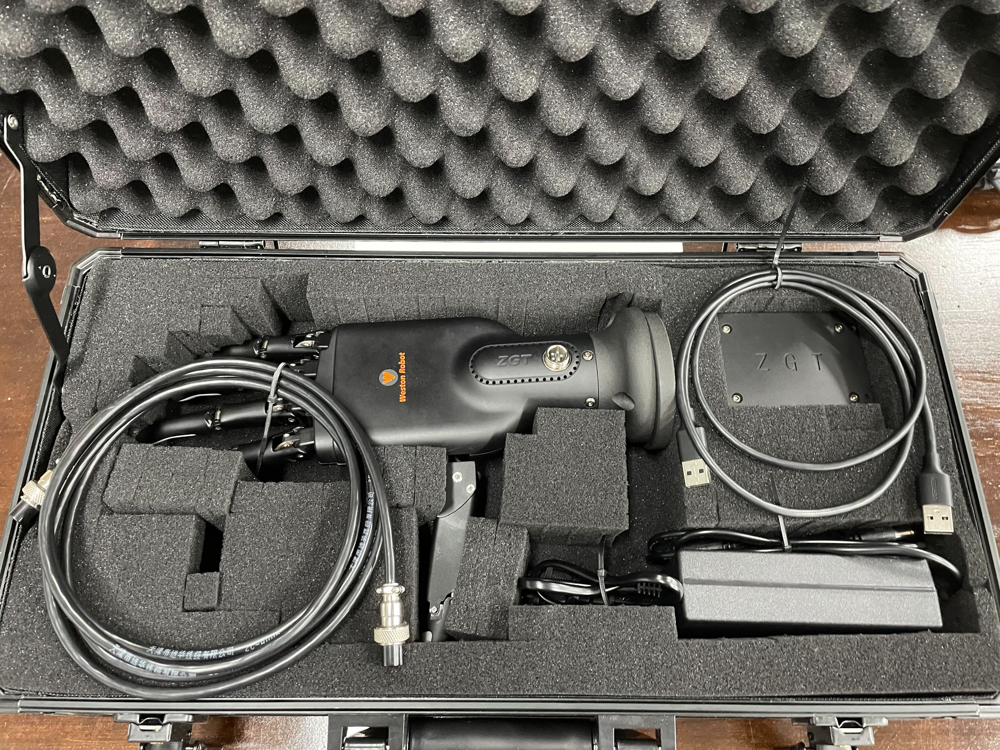
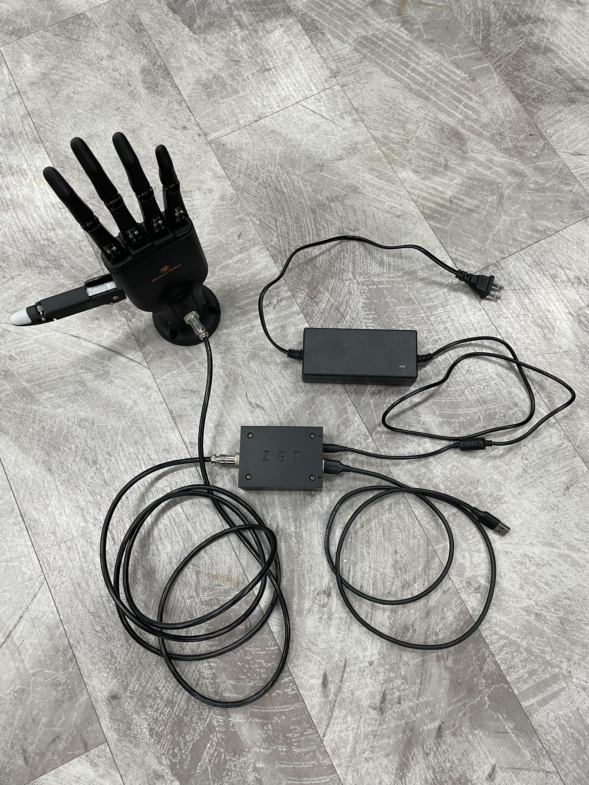

Roger Robot Hand User Guide¶
Revision History¶
Revision |
Date (DD/MM/YYYY) |
Author |
Changes |
|---|---|---|---|
1 |
06/10/2022 |
Hans |
Initial release |
1. Overview¶
The Roger robot hand is designed as a end-effector for collaborative robots. It has the following feature:
Grasping and holding of items
Hand-like monitoring
User interface: ROS1, Linux Application
2. Specifications¶
2.1 In the box¶

Item |
Amount |
|---|---|
Roger Hand |
1 |
Base Plate |
2 |
Power Supply |
1 |
Control Box |
1 |
Aviator CX12-5pin female-female cable |
1 |
USB A male-male cable |
1 |
2.2 Control Box¶
Port |
Protocol |
Function |
|---|---|---|
USB A port |
USB |
Communication interface |
Ethernet port |
/ |
Future extension |
3. Hardware Setup¶
3.1 Startup and Operation¶
3.1.1 Connection¶
Connect provided aviator cable to hand and control box.
Connect provided power supply to control box and power outlet.
Connect provided USB cable to control and host computer.
Switch on the power supply.

3.1.2 Computer¶
- On Ubuntu
Device will show up as a /dev/ttyUSBx device.
- On Windows
Device will show up as a COMx port device.
You may need to install the CP210x driver first, available at: https://www.silabs.com/developers/usb-to-uart-bridge-vcp-drivers?tab=downloads
4. Software Setup¶
- There are 2 ways to interface with the hand out-of-the-box.
ROS1 Driver
Linux Application
4.1 ROS1 Driver¶
4.1.1 Setting up¶
4.1.2 Running¶
$ roslaunch roger_hand_bringup roger_hand_server.launch
Parameters
Parameter |
Description |
Default |
|---|---|---|
port_name |
port to the control box |
“/dev/ttyUSB0” |
Published Topics
Topics |
Message Format |
Description |
|---|---|---|
~/hand_state |
roger_hand_msgs::hand_state |
State of the hand |
Services
Name |
Message Format |
Description |
|---|---|---|
~/set_finger_pose |
roger_hand_msgs::finger_pose |
Set pose of one finger |
~/set_hand_pose |
roger_hand_msgs::hand_pose |
Set pose of entire hand |
~/clear_hand_error |
roger_hand_msgs::clear_error |
Clear any errors raised |
~/set_ampere_feedback |
roger_hand_msgs::ampere_feedback |
Enable current feedback |
~/set_hand_enable |
roger_hand_msgs::hand_enable |
(Dis/En)able hand operation |
Finger IDs
Index |
Joint |
|---|---|
1 |
Thumb |
2 |
Thumb (rotation) |
3 |
Index |
4 |
Middle |
5 |
Ring |
6 |
Little |